Wrap-up · Reference
Lecture 1 slide guide
All 124 slides of the Session 1 lecture, “Course overview and intro” (9 September 2026), in order. For each slide: what it shows, the section of Lecture 1 that explains it, and the Lecture 0 page that gives the biology behind it. Open the slides as a PDF to follow along.
The lecture has five blocks. The first and third describe the course; the second introduces genetic epidemiology; the fourth defines the population-genetic quantities a GWAS relies on; the appendix derives the measures of linkage disequilibrium. The session's reading (Uffelmann et al. 2021) is taught in Part C and the practical in Part D; they have no slides. The descriptions of the slides below are shared with Lecture 0's Lecture 1 decoder, which reads the slides at a beginner's level.
Slides 1–10, 44–55 · Course format and the nine sessions
| Slides | On the slide | Explained in Lecture 1 | Background in Lecture 0 |
|---|---|---|---|
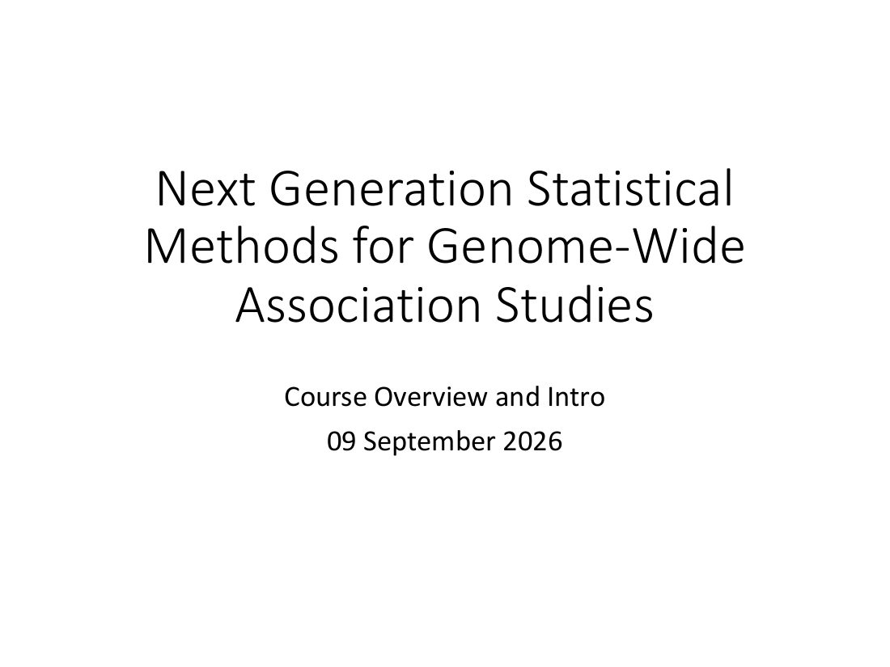 1 | Title slide, 9 September 2026. | Overview: one matrix holds the whole lecture | What a GWAS does p. 9 |
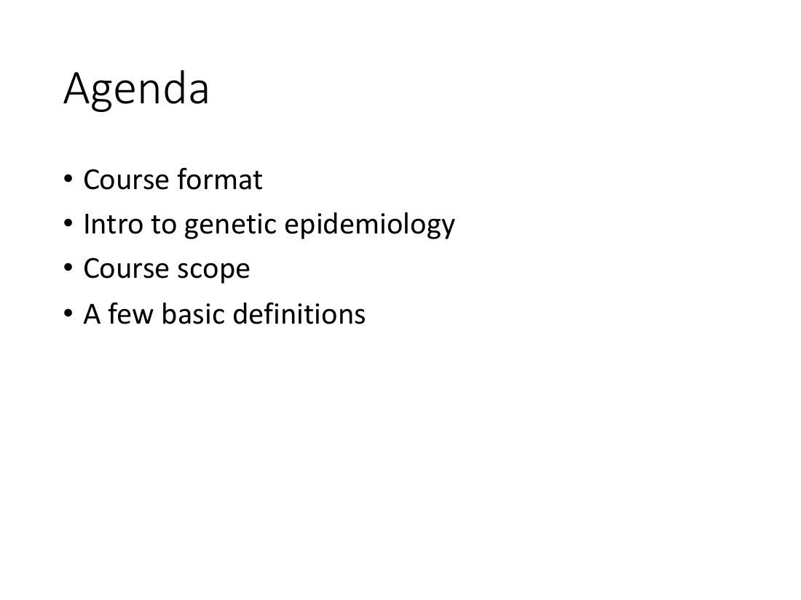 2–3 | Agenda: course format, introduction to genetic epidemiology, course scope, a few basic definitions. The agenda returns on slides 10, 44 and 64 to open each block. | The field map & the course: The workshop and its website | The figure at the top of this page |
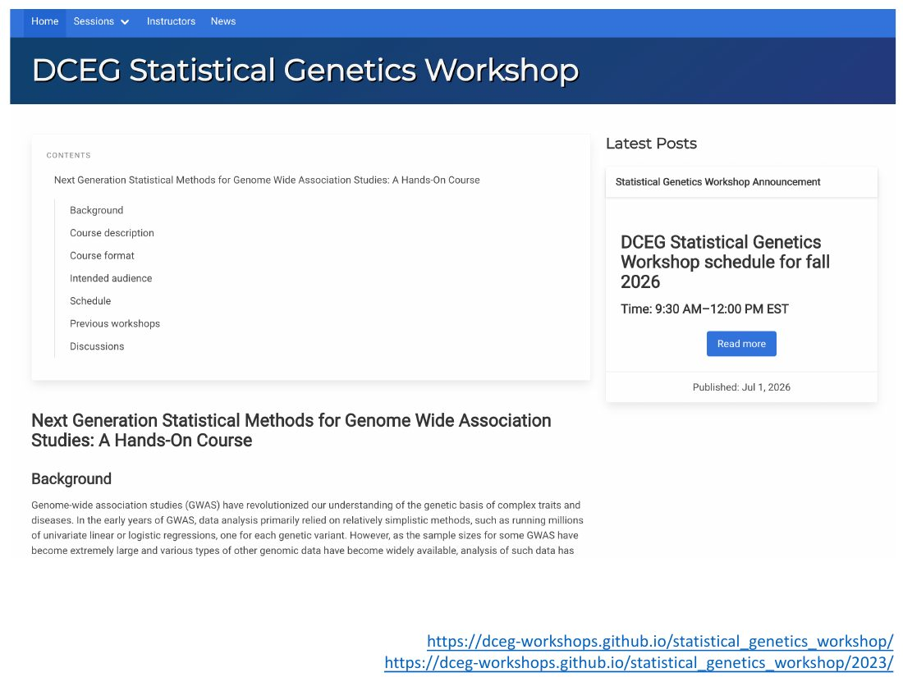 4–5 | Course website and format: nine Wednesday sessions, each a 1.25-hour lecture and a 1.5-hour practical, with reading before and exercises after; hybrid and recorded. Participants are expected to know epidemiologic study designs, basic genetic terms, statistics (testing, estimation, regression, Bayes) and R and the command line. | The field map & the course: The workshop and its website | Epidemiology in five ideas p. 10 |
 6 6 | Schedule of the nine sessions, with dates and instructors. | The field map & the course: The workshop and its website | Session table above |
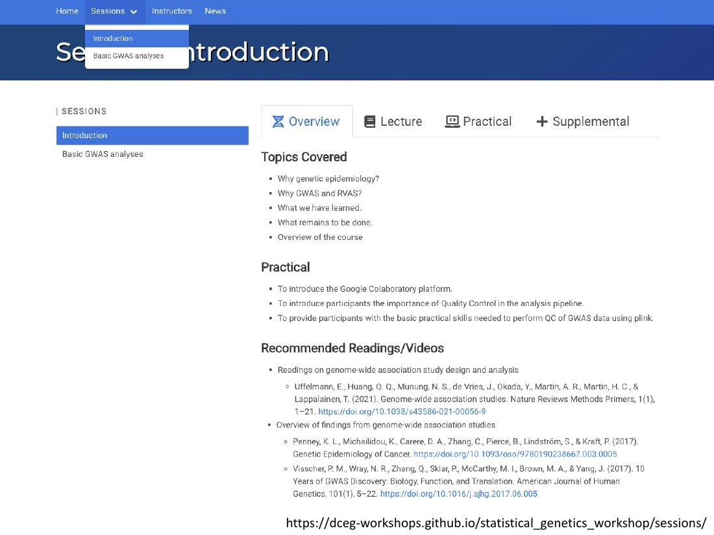 7 | Session 1 web page: topics (why genetic epidemiology; why GWAS and rare-variant association studies, RVAS; what has been learned; what remains) and readings: Uffelmann et al. 2021 (a GWAS primer), Penney et al. 2017 (genetic epidemiology of cancer) and Visscher et al. 2017 (ten years of GWAS discoveries). UpdateThe screenshot shows an earlier version of the page (see slide 8). | The field map & the course: The workshop and its website; Learn more | Learn more (two of the readings) |
 8 8 | Session 1 practical: quality control of GWAS data with PLINK. UpdateThe screenshot shows an earlier version that used Google Colab and assigned ancestry with GrafPop. The current practical runs in RStudio on Biowulf, the NIH high-performance computing cluster, with PLINK 1.9 and GrafAnc.3 | Practical overview: How to work through the practical on this site; Set up your computer: Google Colab | The practical, decoded; QC p. 11 |
| 9, 43, 55 | Pauses for questions: “Questions?”, “Preguntas?”, “Fragen?”. | — | — |
 45 45 | Course scope: the field map with molecular genetics, Mendelian genetics, familial aggregation and heritability, and linkage studies grayed out (“We will not explicitly cover the greyed out topics”). Recommends Sue Ingles' chapter on basic concepts of molecular genetics in Duncan Thomas' book Statistical Methods in Genetic Epidemiology. | The field map & the course: What the course covers | The field map, annotated; Books |
 46–54 46–54 | One slide per session, each highlighting the boxes of the field map that the session covers. | The field map & the course: What the course covers; Slide 46 (Session 1) · GWAS design & data: The input data and quality control; Slide 47 (Session 2) · Association testing & results: One regression per SNP; Slide 48 (Session 3) · Social context: Population descriptors; Slide 49 (Session 4) · Association testing & results: From a locus to causal variants: fine-mapping; Slide 50 (Session 5) · Applications & limits: Heritability and genetic correlation; Slide 51 (Session 6) · Applications & limits: Polygenic scores: predicting from summary statistics; Slide 52 (Session 7) · GWAS design & data: Common and rare variants (Box 1); Slide 54 (Session 9) · Association testing & results: From variants to genes and pathways | Session table above |
Slides 11–43 · Introduction to genetic epidemiology
| Slides | On the slide | Explained in Lecture 1 | Background in Lecture 0 |
|---|---|---|---|
 11 11 | Definitions. Epidemiology: “the study of the distribution and determinants of health-related states in specified populations, and the application of this study to control health problems”. Genetic epidemiology: the role of genetic factors “in families and in populations”, and their interplay with social and environmental factors. | What genetic epidemiology does: What epidemiology and genetic epidemiology study | Epidemiology in five ideas p. 10 |
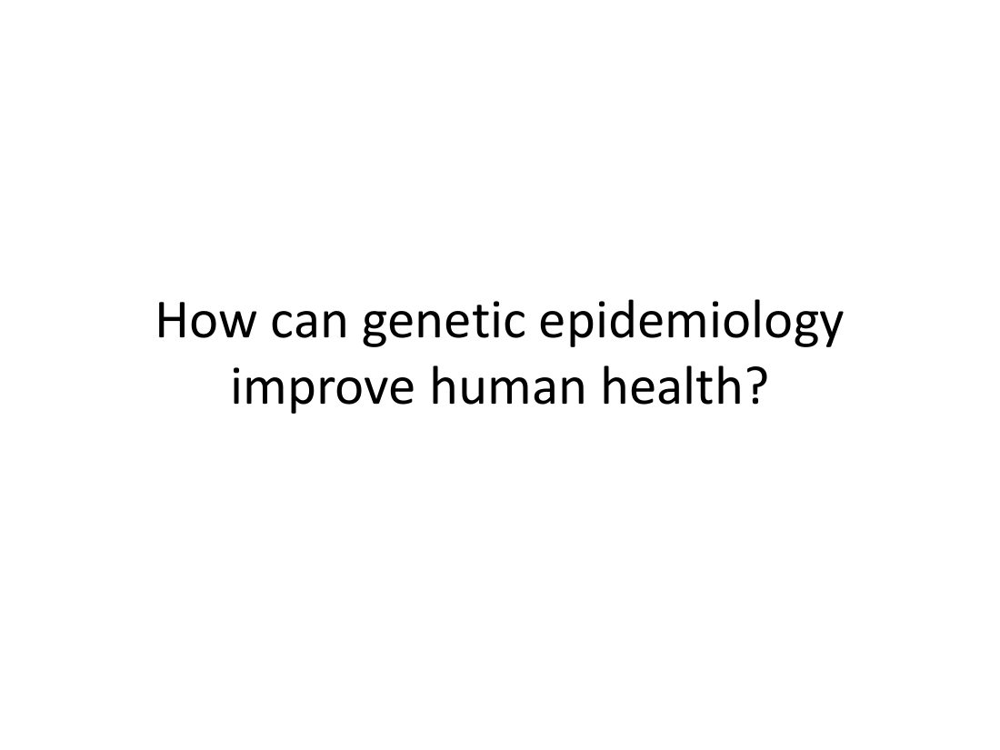 12–14 | “How can genetic epidemiology improve human health?” Two answers: a deeper understanding of disease biology that leads to new medicines, and direct clinical and public-health uses. The same bullets return on slides 18 and 21 (“But wait, there's more!”). | What genetic epidemiology does: How can genetic epidemiology improve health? | From a variant to a medicine p. 9 |
 15 15 | Forward genetics (phenotype → genotype): a healthy person with very low LDL cholesterol, three siblings with the same, and loss-of-function variants in ANGPTL3; drugs that mimic such variants are more likely to be safe and effective. UpdateThe slide says the siblings “carried two copies” of one variant; the family studied carried two different loss-of-function variants, one on each copy of the gene.4 | What genetic epidemiology does: From disease biology to drug targets | ANGPTL3 and BCL11A p. 9; a family story p. 5 |
 16 16 | Reverse genetics (genotype → phenotype): variation in PCSK9 affects LDL cholesterol, and screening finds a healthy person with extremely low LDL and no working PCSK9. UpdateThe slide says “homozygous”; the closest documented case carried two different inactivating variants, one on each copy.5 | What genetic epidemiology does: From disease biology to drug targets | PCSK9: from families to drugs p. 9 |
 17 17 | A GWAS of fetal hemoglobin (HbF) finds a SNP at BCL11A; silencing BCL11A prevents sickle cell disease in mice; trials “are now underway”. UpdateThe SNP (rs1427407) lies inside BCL11A, in an intron that contains an enhancer active in red-cell precursors, rather than near the gene. A gene-editing therapy that disrupts this enhancer (exa-cel) was approved in the US in December 2023.6–8 | What genetic epidemiology does: From disease biology to drug targets | Fetal hemoglobin and BCL11A p. 3; GWAS to therapy p. 9 |
 19 19 | Genetics in public health: predictive screening for rare high-risk variants (BRCA1, BRCA2, Lynch syndrome) and diagnostic newborn screening (29 conditions recommended by the American College of Medical Genetics, among them phenylketonuria, cystic fibrosis and hemoglobinopathies). | What genetic epidemiology does: Screening: genetics in clinics and public health; What genetic epidemiology does: Predictive testing for rare high-risk variants; What genetic epidemiology does: Newborn screening | Single-gene inheritance p. 5; Heritability (phenylketonuria) p. 9 |
 20 20 | Risk-stratified breast cancer screening that combines questionnaire risk factors, mammographic density, a polygenic risk score, family history and rare variants. | What genetic epidemiology does: Risk-stratified screening | Polygenic scores p. 9 |
 22 22 | Mendelian randomization: genetic variants as instrumental variables to test whether an exposure causes an outcome, with its three assumptions drawn as a diagram (Sekula et al. 2016).15 | What genetic epidemiology does: Mendelian randomization: genotypes as instruments; What genetic epidemiology does: Why the naive regression fails, in one simulation | Mendelian randomization p. 9; why genotypes are special variables p. 5 |
 23 23 | Mendelian randomization suggests that C-reactive protein (CRP) and HDL cholesterol do not cause coronary heart disease, consistent with clinical trials. Note“HLD” on the slide means HDL.9 | What genetic epidemiology does: CRP and HDL cholesterol: MR and the trials | Mendelian randomization p. 9 |
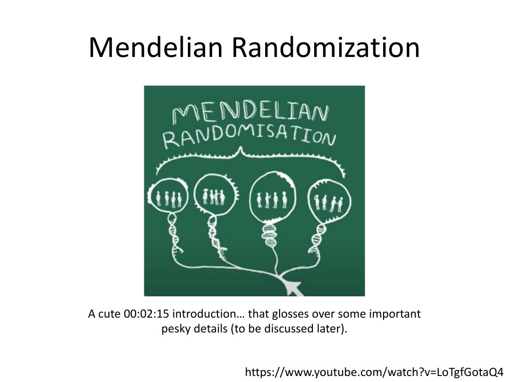 24 | A two-minute video introduction to Mendelian randomization that “glosses over some important pesky details”. | What genetic epidemiology does: Mendelian randomization: genotypes as instruments | The three assumptions p. 9 |
 25 25 | Transcriptome-wide association study (TWAS): genetic predictors of gene expression are used to test predicted expression against an outcome, useful when the intermediate is hard to measure; “More to come on October 14th!” (Session 5). | What genetic epidemiology does: TWAS: testing genetically predicted gene expression | eQTLs and TWAS p. 3 |
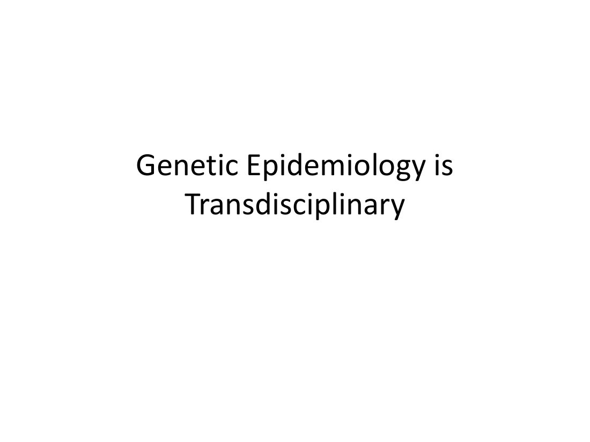 26–28 | Genetic epidemiology is transdisciplinary. Its history runs from Mendel's discrete traits and the continuous traits of Galton and Pearson, through the synthesis of Fisher, Wright and Haldane, to molecular biology and the Human Genome Project; Neel (1984) ties the field to “the concept of multifactorial causation”. | The field map & the course: Where genetic epidemiology comes from | Genetic architecture p. 9; Mendel's laws p. 5 |
 29 29 | The field map: eight subfields in two rows, plus social factors. | The field map & the course: The field map: eight boxes and a frame | The field map, annotated |
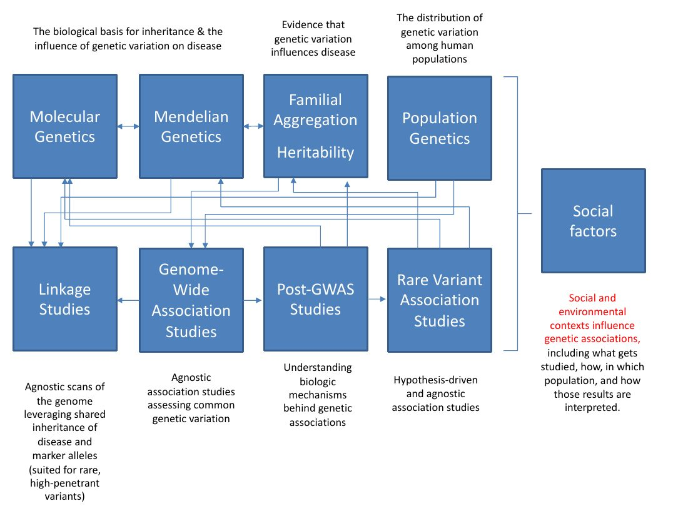 30, 36, 38 | The field map again, each time with part of the “Social factors” caption in red. Each part introduces an example: social and environmental contexts influence genetic associations (30, then margarine); “what gets studied, how, in which population” (36, then diversity); “how those results are interpreted” (38, then history). | The field map & the course: The field map: eight boxes and a frame; Social context | Social factors box |
 31–35 31–35 | Margarine versus butter in UK Biobank: a GWAS of spread type has peaks at APOE and LPA. Alleles that raise LDL cholesterol, statin use or the risk of myocardial infarction (MI, heart attack) raise margarine use. Take-home messages: “Social context matters”; “Hypothesized biological mechanisms should be concrete & testable”. | Social context: Margarine versus butter | Association is not causation p. 9; Manhattan plots p. 13 |
 37 37 | Lack of representation: most GWAS participants have been of European ancestry. Studies of a broader range of ancestries find new disease-related variants, sharpen fine-mapping and make polygenic risk models more generalizable (Martin et al. 2019).16 | Social context: Who is in GWAS | Diversity in genetic studies p. 8; Polygenic scores p. 9 |
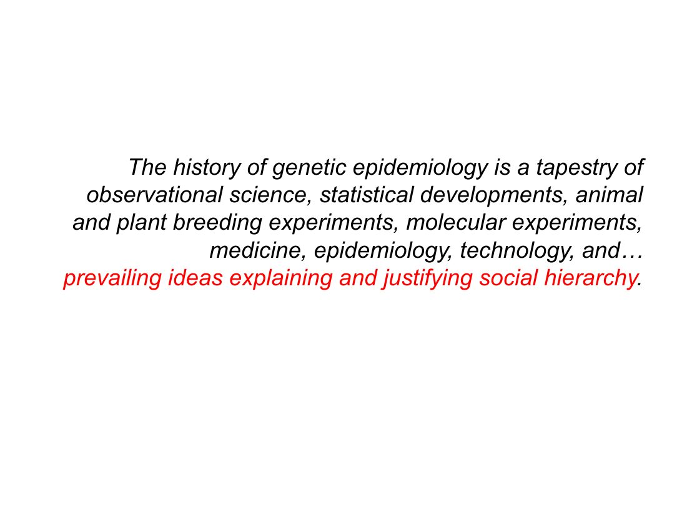 39–41 | The history of the field includes “prevailing ideas explaining and justifying social hierarchy”: essentialist theories of race (Blumenbach), eugenics (Galton, Pearson, Fisher), and the policies they supported, such as forced sterilization and immigration restrictions. Eugenics “was firmly within the Western scientific establishment”. | The field map & the course: “And…”: the rest of the sentence on slide 39; Social context: Eugenics and misuse | Words matter: population descriptors p. 8 |
 42 42 | A 2022 Nature comment by Carlson and colleagues on extremists' misuse of genetics research, next to the 2023 National Academies report on population descriptors.17 | Social context: Eugenics and misuse; Social context: Population descriptors | Population descriptors p. 8 |
Slides 56–63 · Molecular genetics
| Slides | On the slide | Explained in Lecture 1 | Background in Lecture 0 |
|---|---|---|---|
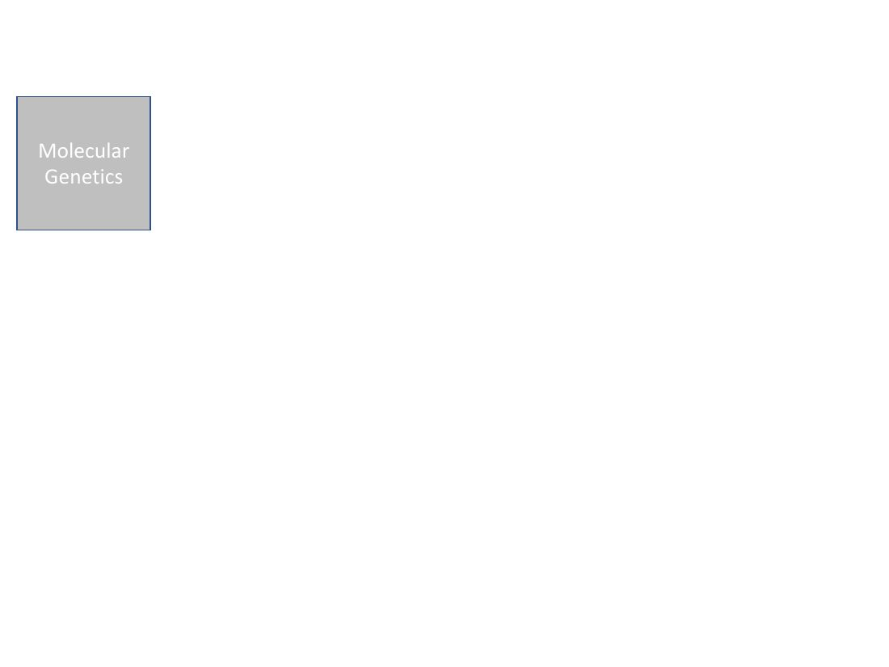 56 | Block title: “Molecular Genetics”. | From molecules to SNP data: The molecule behind a SNP | — |
 57 57 | DNA: a sugar–phosphate backbone, four bases (A, C, G, T), hydrogen bonds between A–T and C–G pairs, and sequence read or copied from 5′ to 3′. “Antisense (mirror image) copies” means that each strand is the reverse complement of the other. | From molecules to SNP data: The molecule behind a SNP | Base pairing, direction p. 2 |
 58 58 | The genome is “ca. 3.3 billion base-pairs”; 1.5% of it is protein-coding sequence; two people share on average over 99.9% of their sequence. UpdateThe GRCh38 reference has about 3.1 billion base pairs per set of chromosomes (3,099,734,149 bp), and the gap-free T2T-CHM13 sequence 3.055 billion without a Y chromosome; protein-coding sequence covers about 1.1–1.2% of GRCh38.10–12 | From molecules to SNP data: The molecule behind a SNP | Genome by the numbers p. 1; What a gene is p. 3; How different are two genomes? p. 4 |
 59 59 | 46 chromosomes: 22 pairs of autosomes and one pair of sex chromosomes, each a single DNA molecule from 50 million base pairs (chromosome 22) to 245 million (chromosome 1), about 125 million on average. UpdateIn GRCh38 the shortest chromosome is 21 (46.7 Mb; chromosome 22 is 50.8 Mb), chromosome 1 is 249.0 Mb and the mean autosome is 130.7 Mb (1 Mb = 1 million base pairs).10 | From molecules to SNP data: The molecule behind a SNP | Genome by the numbers, two sets p. 1 |
 60 60 | A human karyotype. Cytobands such as 1p12 and 8q24 (read “eight q two four”) name locations; p is the short arm and q the long arm. In the nucleus, chromosomes are usually unwound rather than compact. | From molecules to SNP data: The molecule behind a SNP | Karyotypes, packaging p. 1 |
 61 61 | The central dogma: DNA is copied (replication), transcribed into RNA in the nucleus, and translated into protein by ribosomes in the cytoplasm. Changes in coding and non-coding sequence can both affect molecular function. | From molecules to SNP data: The molecule behind a SNP | Transcription, translation p. 3 |
 62 62 | Four panels: transcription and its regulation by cis- and trans-acting elements; gene structure (enhancer, promoter, exons, introns, UTRs, poly-A tail); translation by ribosomes and transfer RNAs; the genetic code. | From molecules to SNP data: The molecule behind a SNP | Regulation, gene anatomy, genetic code p. 3 |
 63 63 | How DNA changes can alter function: coding changes (nonsense, missense, synonymous), regulatory changes (promoter, enhancer, splice site, 5′ or 3′ UTR) and structural changes (chromatin, methylation). Animal studies suggest that fewer than half of disease-causing loci are coding changes. | From molecules to SNP data: The molecule behind a SNP | What variants do p. 4; Gene regulation p. 3 |
Slides 64–106 · A few basic definitions
| Slides | On the slide | Explained in Lecture 1 | Background in Lecture 0 |
|---|---|---|---|
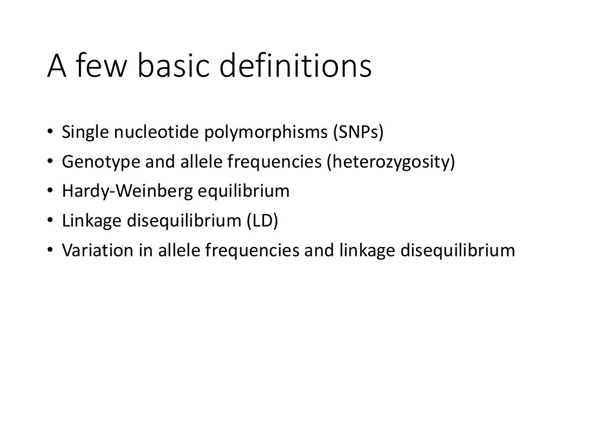 65–66 | The list of definitions to come: SNPs; genotype and allele frequencies (heterozygosity); Hardy–Weinberg equilibrium; linkage disequilibrium; variation in allele frequencies and LD. | From molecules to SNP data: What a SNP is, and how it is named; Frequencies & HWE tests; Linkage disequilibrium; Population structure & PCA | This block |
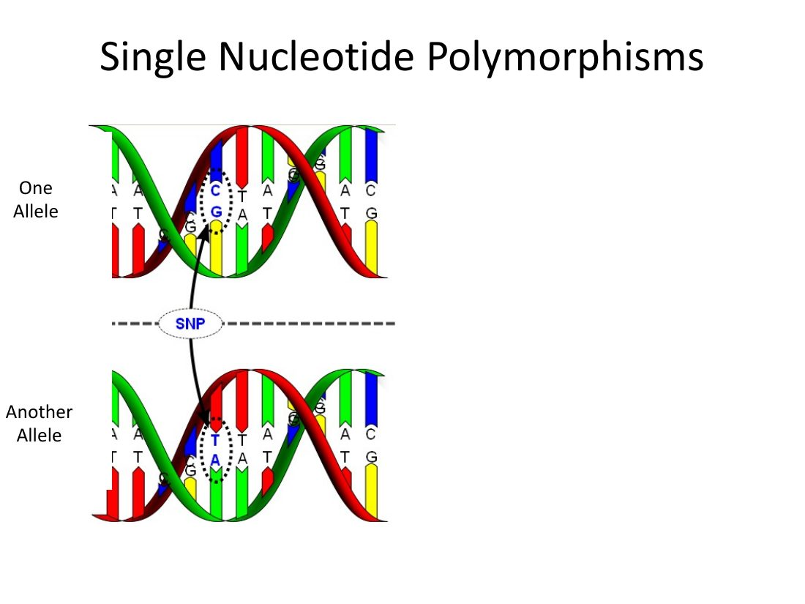 67 | A SNP drawn on two DNA molecules: one position, with a reference allele on one and another (variant) allele on the other, labeled B and b. | From molecules to SNP data: SNV, polymorphism and SNP | Genotypes, allele labels p. 4 |
 68 68 | SNPs almost always have two alleles. The same SNP can be written “C/T” or “G/A”, so the strand must be stated, usually the + strand of the reference genome GRCh38; rs671 and chr12:111803962:G:A name the same variant. UpdateThe paper cited for strand nomenclature (Nelson et al.) was published in Trends in Genetics in 2012, not 2020.13 | From molecules to SNP data: Positions and genome builds; From molecules to SNP data: Strands: one SNP, two spellings | Strands in SNP data, genome builds p. 2; Naming variants p. 4 |
 69 69 | Two invented examples. For a G/T SNP, two studies that report opposite strands (G/T and C/A) are easy to reconcile. For a C/G SNP, the other strand also reads C/G, so the same result can look reversed: C/G and A/T SNPs are “strand ambiguous”. | From molecules to SNP data: A/T and C/G SNPs; From molecules to SNP data: Harmonizing two files; Step 7 · Reference PCA: What goes wrong when two files meet | Strand-ambiguous SNPs p. 2 |
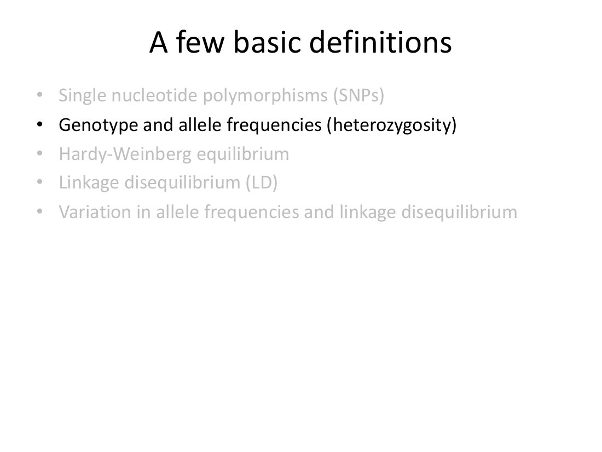 70–71 | Definitions: an allele is the sequence at a polymorphic locus; a person carries at most two alleles, but a population can carry more; the pair a person carries is their genotype. Example: the ABO blood group, whose alleles A and B are codominant with each other and dominant over O. | Frequencies & HWE tests: Genotypes and their frequencies | Genotypes, more than two alleles p. 4; dominance p. 5 |
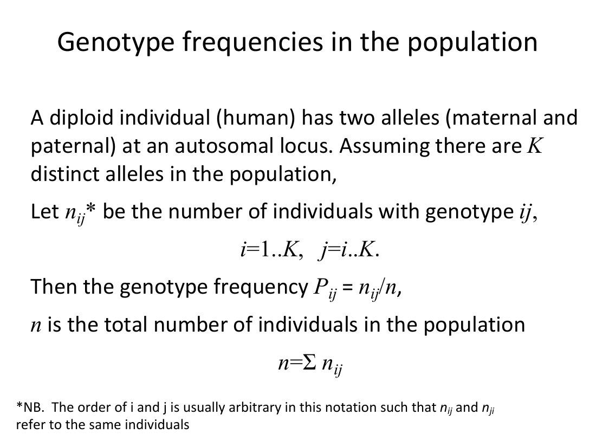 72 | Notation: \(K\) distinct alleles in the population; \(n_{ij}\) people with genotype \(ij\), that is, with one copy of allele \(i\) and one of allele \(j\); genotype frequency \(P_{ij} = n_{ij}/n\), where \(n = \sum n_{ij}\), the sum over all genotypes, is the number of people. | Frequencies & HWE tests: Genotypes and their frequencies | Counting p. 6; notation cheat sheet |
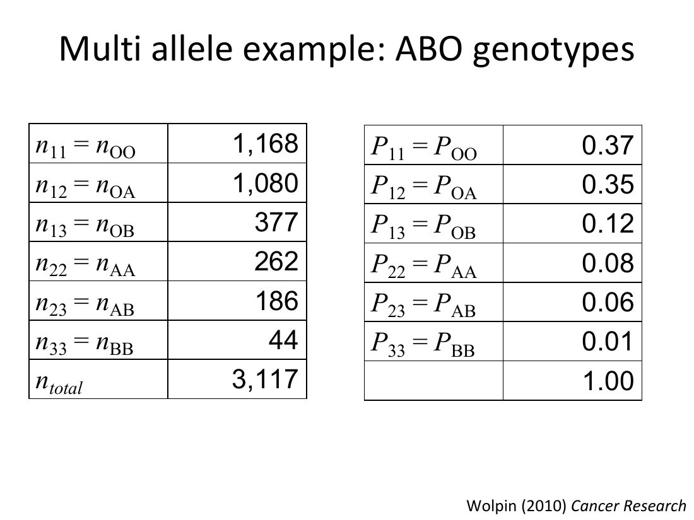 73 | ABO genotype counts and frequencies for 3,117 people (for example 1,168 OO). | Frequencies & HWE tests: Genotypes and their frequencies | Counting p. 6 |
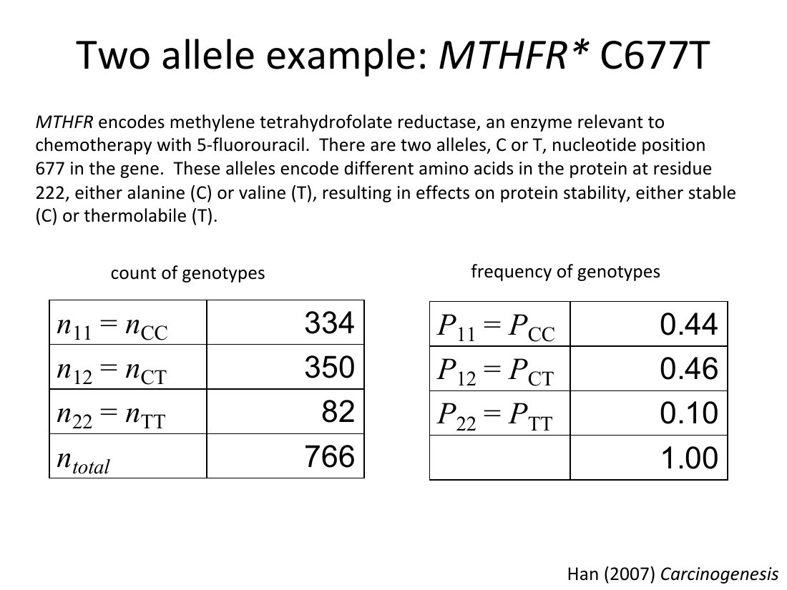 74 | MTHFR C677T (rs1801133): two alleles that encode different amino acids in an enzyme relevant to chemotherapy with 5-fluorouracil; 334 CC, 350 CT and 82 TT. | Frequencies & HWE tests: Genotypes and their frequencies | Counting p. 6; Naming variants p. 4 |
 75–77 75–77 | Allele frequency \(p_i = m_i/m\), where \(m_i\) is the number of copies of allele \(i\) and \(m = 2n\) is the number of chromosome copies that carry the locus in \(n\) people. ABO: \(p_{\mathrm{O}} = .61\), \(p_{\mathrm{A}} = .29\), \(p_{\mathrm{B}} = .10\). MTHFR: \(p_{\mathrm{C}} = .66\), \(p_{\mathrm{T}} = .34\). | Frequencies & HWE tests: From genotype counts to allele frequencies; Frequencies & HWE tests: Using the prediction: allele frequencies from blood groups | Counting p. 6 |
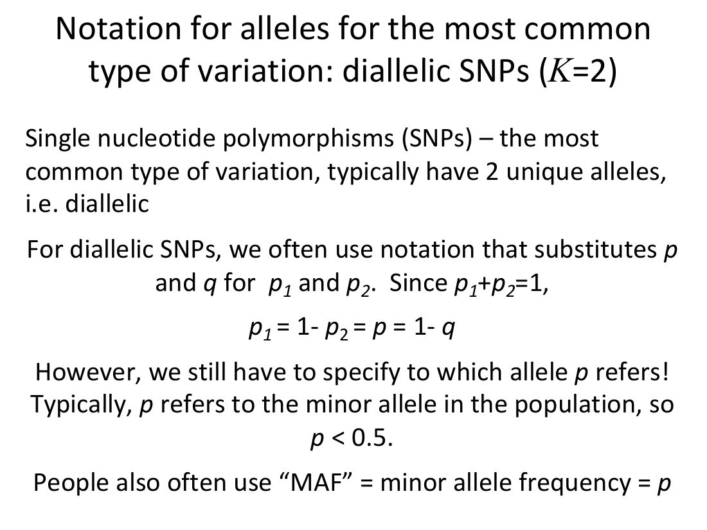 78 | For a diallelic SNP (\(K = 2\)), \(p\) and \(q\) replace \(p_1\) and \(p_2\), so \(q = 1 - p\); \(p\) usually refers to the minor allele, and then \(\mathrm{MAF} = p\). You still have to say which allele \(p\) refers to. | Frequencies & HWE tests: From genotype counts to allele frequencies | \(p\), \(q\) and the MAF p. 6; allele labels p. 4 |
 79 79 | The “\(N\)”: for genotypes, the number of people, \(n\); for alleles, the number of chromosome copies, \(m = 2n\) for an autosome. | Frequencies & HWE tests: From genotype counts to allele frequencies; Frequencies & HWE tests: How precise is an allele frequency? | The \(N\) for genotypes and alleles p. 6 |
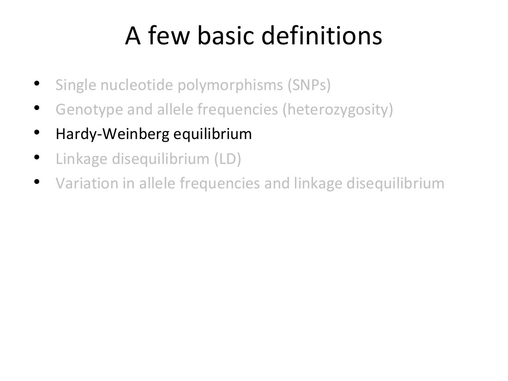 80–81 | HWE (Hardy and Weinberg, 1908) and its assumptions: random mating, infinite population size, discrete generations, equal allele frequencies in males and females, no mutation, migration or selection. It is often a good approximation even when they do not hold exactly. | Frequencies & HWE tests: Hardy–Weinberg equilibrium: the prediction; Frequencies & HWE tests: What the equilibrium assumes | Hardy–Weinberg equilibrium p. 6 |
 82 82 | The formula: \(P_{ij} = 2p_ip_j\) for \(i \ne j\) and \(P_{ii} = p_i^2\), where \(P_{ij}\) is the frequency of genotype \(ij\) and \(p_i\) the frequency of allele \(i\); for a diallelic SNP with allele frequencies \(p\) and \(q\), \(P_{11} = p^2\), \(P_{12} = 2pq\) and \(P_{22} = q^2\). Genotype probabilities are binomial with parameters \((2, p)\): the number of copies of allele 1 in a person is \(\Binomial(2, p)\). | Frequencies & HWE tests: Where p², 2pq and q² come from; Frequencies & HWE tests: Testing Hardy–Weinberg equilibrium | Hardy–Weinberg equilibrium p. 6 |
 83 83 | Uses of HWE: testing for genotyping errors, simplifying calculations, testing the assumptions, and (with low power) case-only tests for some inheritance modes. | Frequencies & HWE tests: Hardy–Weinberg tests in quality control; Step 2 · Hardy–Weinberg: What the step finds | Testing HWE p. 6; variant QC p. 11 |
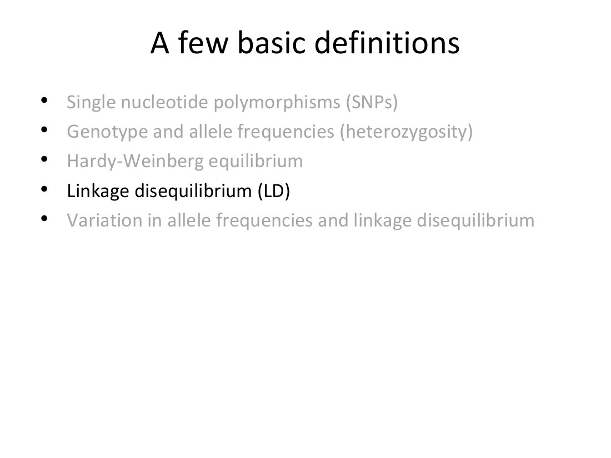 84–85 | LD is the correlation between genetic markers in a population, usually measured by \(r^2\), the squared correlation between the alleles at two loci on the same chromosome copy (defined in the appendix); a high \(r^2\) needs similar MAFs. Causes: mutation and recombination, selection, demography. Uses: counting independent tests, choosing a minimal set of SNPs that covers the rest, imputation. | Linkage disequilibrium: Where LD comes from; Step 3 · LD pruning: Why steps 4–6 need nearly independent SNPs | How LD arises, \(r^2\), LD in GWAS p. 7 |
 86 86 | LD decays with distance: the correlation \(r\) between the alleles of pairs of SNPs, plotted against physical distance in five regions (Pritchard and Przeworski 2001), with a dotted line at \(r = 0.316\) (\(r^2 = 0.1\)): pairs above it have what Kruglyak (1999) called “useful LD” for association studies.18 | Linkage disequilibrium: What to expect at a given distance, and why pairs scatter | LD patterns p. 7 |
 87–88 87–88 | The allele frequency spectrum for SNPs in about 1,000 genes sequenced in 697 people: most SNPs are rare (MAF < 1%), but most differences between two people come from common variants (MAF > 5%). dbSNP records the SNPs seen in genetic studies. | Population structure & PCA: Frequencies differ; Population structure & PCA: The spectrum of one sample: why so many singletons | The allele frequency spectrum p. 6 |
 89–91 89–91 | Allele frequencies change smoothly with geography: the ABO B allele worldwide (slide 90) and blood group A within Japan (slide 91), both from Lewontin's Human Diversity (1995). Note“B allele frequency” on slide 90 is the frequency of the ABO B allele, not the B allele frequency (BAF) of genotyping arrays. | Population structure & PCA: Frequencies change smoothly with geography | Why allele frequencies differ p. 6; BAF: LRR and BAF p. 11 |
 92 92 | Allele frequencies of SNPs in targeted regions, compared between pairs of HapMap reference samples (CEU, YRI, CHB, JPT): they agree most closely between the Japanese and Han Chinese samples.19 | Population structure & PCA: Two populations, SNP by SNP; Population structure & PCA: Measuring the differences: FST | Reference samples p. 8; five populations p. 6 |
 93 93 | “There is much greater variation, e.g. more SNPs, among African populations than others, consistent with out of Africa hypothesis”, with numbers of variants per genome by type (Abecasis, 2014). | Population structure & PCA: More variation within Africa; Step 7 · Reference PCA: The reference: 1000 Genomes phase 3 | Population history p. 8; Heterozygosity p. 6 |
 94–96 94–96 | LD also differs between populations: the mean of two LD measures, \(D'\) and \(r^2\) (both defined in the appendix), against distance in HapMap samples (slide 95) and \(r^2\) along the chromosomes (slide 96). LD decays fastest in the YRI (Yoruba) samples.19 | Linkage disequilibrium: LD across populations; Population structure & PCA: Linkage disequilibrium differs too | LD patterns p. 7 |
 97 97 | Why allele frequencies and LD vary: drift; migration, isolation, bottlenecks and founder effects; selection; non-random mating; mutation. | Population structure & PCA: Why frequencies differ | Why allele frequencies differ p. 6; Population history p. 8 |
 98 98 | These differences can place people on a map of genetic similarity, used in QC or as covariates against confounding. Model-based methods: STRUCTURE, GRAF-pop. Model-free: PCA. | Population structure & PCA: STRUCTURE and ADMIXTURE; Step 8 · GrafAnc: What the step finds | PCA, stratification p. 8 |
 99–101 99–101 | STRUCTURE estimates the share of each person's genome that “comes from” each of \(K\) ancestral populations; results on 1000 Genomes samples at \(K = 5\), 6 and 7 (slide 100 is titled “STRUCTURE on 1KG”, but the study it comes from, Martin et al. 2017, fitted the model with ADMIXTURE); “Don't overinterpret these proportions!” (Lawson et al. 2018).20 | Population structure & PCA: The model and its likelihood; Population structure & PCA: Supervised fits, GRAF-pop and GrafAnc; Step 8 · GrafAnc: From scores to AncGroupID | STRUCTURE, ADMIXTURE and GrafAnc p. 8 |
 102–103 102–103 | PCA summarizes many variables with a few; applied to genotypes, it captures structure, as in the PCA of Europeans that mirrors the map of Europe (Novembre et al. 2008).21 | Population structure & PCA: PCA; Population structure & PCA: Worked example: six people, five SNPs | PCA of genotypes p. 8 |
 104–105 104–105 | Limitations: the Europe picture is “too pretty” by design, because people whose grandparents came from different countries were excluded; PCs only summarize the data at hand: who is in the data, and who is not? (Lewis et al. 2022).22 | Population structure & PCA: What PCs depend on; Step 6 · PCA: What clusters mean, and what they do not; Step 7 · Reference PCA: Look at the merged PCA | PCA, population descriptors p. 8 |
 106 106 | “Enough talk… on to hands-on practice!” | Practical overview: How to work through the practical on this site; Practical overview: Mental model | The practical, decoded |
Slides 107–124 · Appendix: measures of LD
| Slides | On the slide | Explained in Lecture 1 | Background in Lecture 0 |
|---|---|---|---|
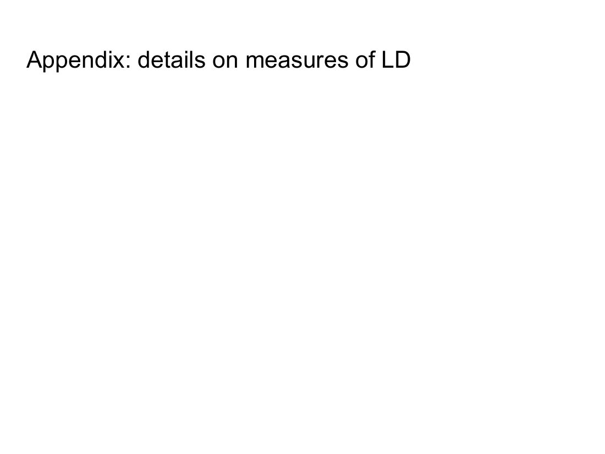 107–108 | Appendix title; part 1, haplotypes and their relationship to LD. | Linkage disequilibrium: Where LD comes from | Haplotypes and phase p. 7 |
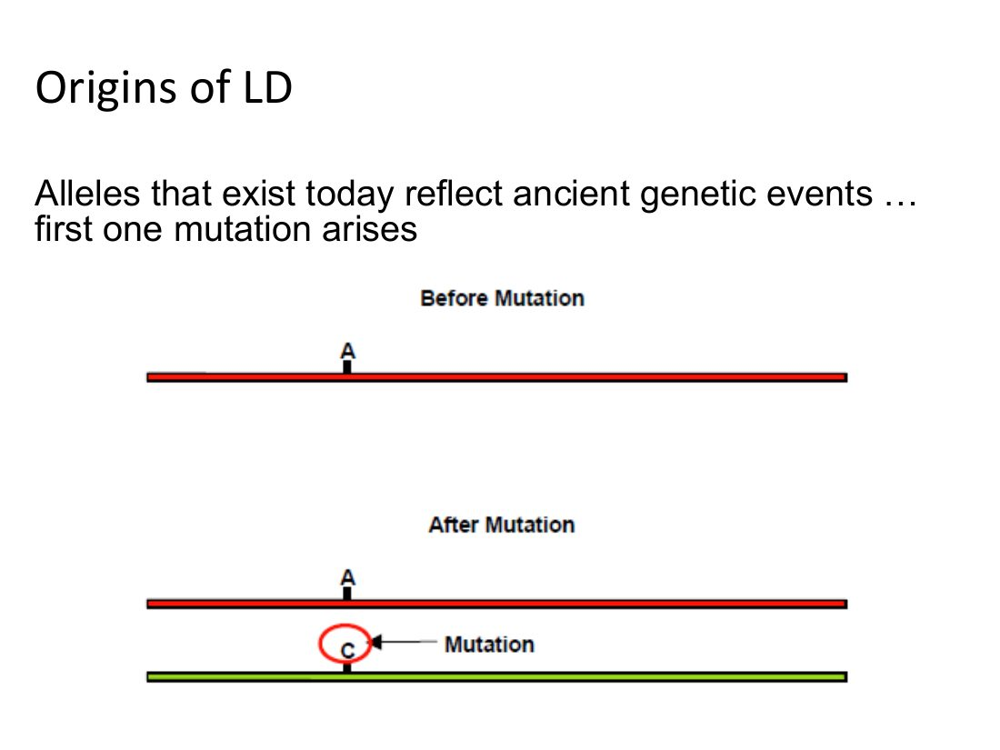 109–111 | Origins of LD: a mutation arises on one ancestral chromosome, later another mutation arises nearby, and recombination in meiosis creates new combinations of the ancestral alleles. | Linkage disequilibrium: Where LD comes from | How LD arises p. 7; Meiosis p. 5 |
 112 112 | “Chromosomes are mosaics of ancestral haplotypes”; the size of the conserved pieces depends on the recombination and mutation rates. | Linkage disequilibrium: Where LD comes from | How LD arises p. 7 |
 113 113 | Haplotypes are the ordered alleles at several loci along the same chromosome, that is, phased genotypes. | Linkage disequilibrium: Genotypes to haplotypes | Haplotypes and phase p. 7 |
 114 114 | Genotyping does not show phase. Long single-molecule reads can, but haplotypes are usually inferred, for example with the EM algorithm. | Linkage disequilibrium: Phase is not observed: the 3 × 3 genotype table | Haplotypes and phase p. 7; Phasing p. 11 |
 115 115 | Strictly, LD combines two conditions: the alleles at two loci are not independent (“gametic disequilibrium”), and the loci are linked (recombination fraction \(\theta < \tfrac{1}{2}\)). For markers on the same chromosome the two terms are used interchangeably. | Linkage disequilibrium: LD between unlinked loci: gametic disequilibrium | How LD arises p. 7; Linkage p. 5 |
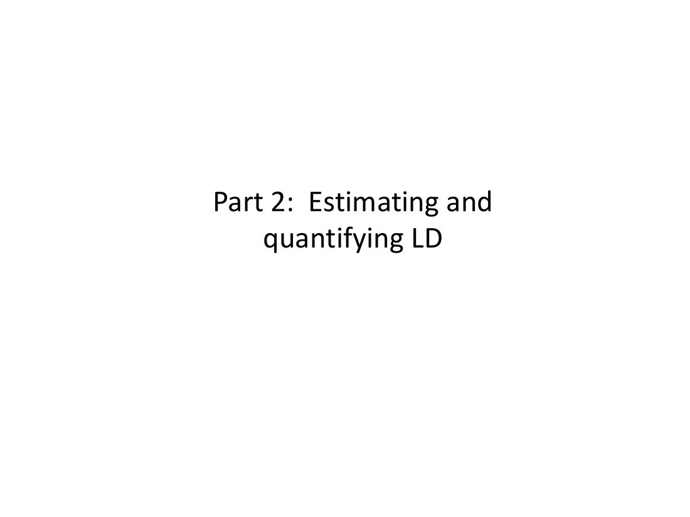 116–117 | Part 2. From genotypes to haplotypes: 8 people at two nearby loci; only the 5 people heterozygous at both loci have ambiguous phase, and the EM algorithm infers 16 haplotypes: 8 AG, 2 Ag, 0 aG and 6 ag. | Linkage disequilibrium: The EM algorithm, step by step | From genotype counts to haplotype counts p. 7 |
 118 118 | \(\delta\) (“also sometimes termed \(D\)”): each of the four haplotype frequencies is the product of its two allele frequencies plus or minus \(\delta\), for example \(p_{\mathrm{AG}} = p_{\mathrm{A}}p_{\mathrm{G}} + \delta\) and \(p_{\mathrm{aG}} = p_{\mathrm{a}}p_{\mathrm{G}} - \delta\). Because every haplotype frequency lies between 0 and 1, the allele frequencies limit \(\delta\) to the range from \(\delta_{\min}\) to \(\delta_{\max}\). | Linkage disequilibrium: Measures of LD | \(D\): departure from independence p. 7 |
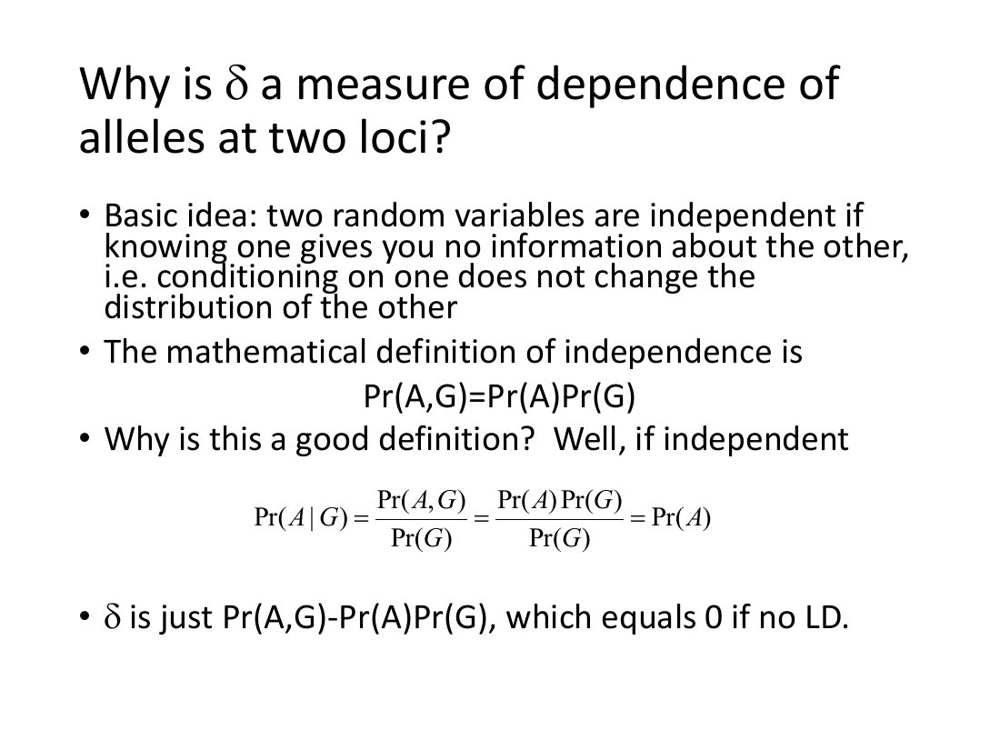 119 | For one chromosome copy, independence of the alleles at the two loci means \(\Pr(\mathrm{A}, \mathrm{G}) = \Pr(\mathrm{A})\Pr(\mathrm{G})\), where \(\Pr(\mathrm{A}, \mathrm{G}) = p_{\mathrm{AG}}\) is the probability that the copy carries both A and G. Equivalently, \(\Pr(\mathrm{A} \mid \mathrm{G}) = \Pr(\mathrm{A})\): knowing the allele at one locus does not change the probabilities at the other. \(\delta = \Pr(\mathrm{A}, \mathrm{G}) - \Pr(\mathrm{A})\Pr(\mathrm{G})\), which is 0 when there is no LD. | Linkage disequilibrium: D: one free number in the 2 × 2 table | \(D\) p. 7 |
 120 120 | \(D' = \delta/\max(\delta)\) divides \(\delta\) (the same \(D\)) by the most extreme value it can take with the same sign, given the allele frequencies: \(\delta_{\max}\) if \(\delta > 0\), \(|\delta_{\min}|\) if \(\delta < 0\). \(r^2\), also written \(\Delta^2\), divides \(\delta^2\) by the product of the four allele frequencies, \(p_{\mathrm{A}}q_{\mathrm{A}}p_{\mathrm{G}}q_{\mathrm{G}}\), where \(q_{\mathrm{A}} = p_{\mathrm{a}}\) and \(q_{\mathrm{G}} = p_{\mathrm{g}}\). | Linkage disequilibrium: D′ and r² | \(D'\), \(r^2\) p. 7 |
 121 121 | \(|D'| = 1\) is taken as evidence of no recombination; \(r\) is the Pearson correlation between 0/1 allele codes at the two loci. NoteThe square-root sign drawn over the formula is not part of it: \(r = \tfrac{1}{N}\sum_{i=1}^{N} (X_i - \bar{X})(Y_i - \bar{Y})/(\sigma_X\sigma_Y)\), which can be negative; \(r^2\) is its square. Here \(X_i\) and \(Y_i\) are the codes of chromosome copy \(i\) at the two loci (0 for A or G, 1 for a or g), \(\bar{X}\) and \(\bar{Y}\) their means, and \(\sigma_X\) and \(\sigma_Y\) their standard deviations over the \(N\) copies. | Linkage disequilibrium: D′ and r² | \(r^2\): the squared correlation p. 7 |
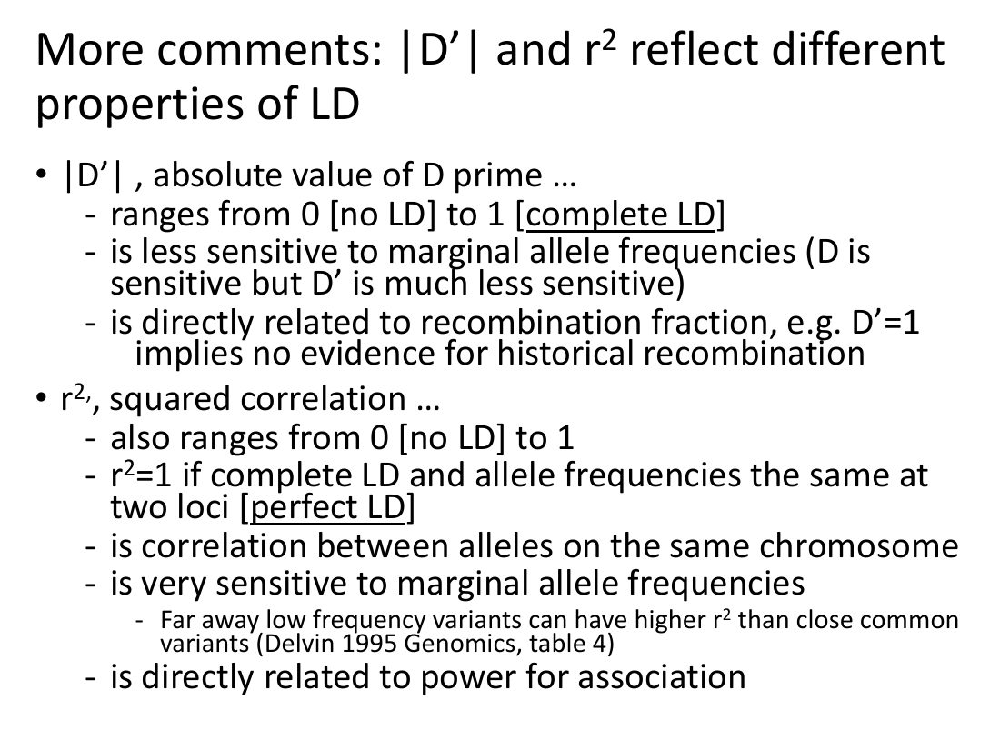 122 | \(|D'|\) and \(r^2\) measure different things: \(|D'|\) reflects recombination history and depends less on allele frequencies; \(r^2\) depends strongly on them, reaches 1 only when the two SNPs have the same minor allele frequency, and is directly related to the power of association tests. Update“Delvin 1995 Genomics” is Devlin and Risch (1995), Genomics 29:311–322.14 | Linkage disequilibrium: D′ and r² | \(r^2\), \(D'\) p. 7 |
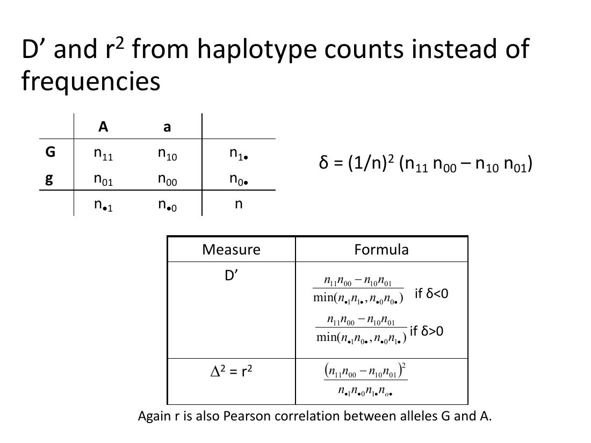 123 | The same formulas written with haplotype counts \(n_{11}\), \(n_{10}\), \(n_{01}\), \(n_{00}\) (first index 1 for G and 0 for g, second index 1 for A and 0 for a) and their totals, for example \(\delta = (n_{11}n_{00} - n_{10}n_{01})/n^2\). Here \(n\) counts chromosome copies, not people. | Linkage disequilibrium: From haplotype counts: slides 123–124 recomputed | Worked example p. 7; notation cheat sheet |
 124 124 | Worked example (8 AG, 2 Ag, 0 aG, 6 ag): \(\delta = (8 \times 6 - 0 \times 2)/16^2 = 48/256 = 0.1875\), \(D' = 1\), \(r^2 = 0.6\). Tip: if any of the four counts is 0, \(|D'| = 1\). | Linkage disequilibrium: From haplotype counts: slides 123–124 recomputed | Worked example: slide 124 p. 7 |